已定：符号内核是蜗牛，B 邮票转为页面 Logo，潮间带皮不再投入。 本轮转向：拿掉火漆容器。火漆讲的是「密封与授权」，而产品的物质语言是纸与墨—— 册皮是纸上的雕版画，图鉴是一墙邮票，母皮叫日光胶片、底色是暖米纸。 火漆是这套语言里唯一不属于纸墨的元素，也是声音最大的那个。
诊断：现有隐喻是拼的——旅途是相册、识别是专家鉴定、结算是证书加火漆、收藏是邮票册、母皮叫日光胶片。 五个物来自五个世界：家庭生活、机构、欧洲书信、集邮、摄影。各自都不差，凑在一起就是拼贴感。 判断标准：一套叙事要能不打补丁地回答五个问题——出行是什么、交出照片是什么动作、等待时发生了什么、揭晓的那一下是什么、收藏放在哪儿。
| 产品环节 | 冲印叙事 | 为什么成立 |
|---|---|---|
| 一次旅途 | 一卷胶卷 | 有限的格数、一次出行拍完，天然是容器 |
| 上传照片 | 拍下这一格 | 就是用户真实在做的事，零转译 |
| 鉴定中 | 送冲、显影中 | 等待有了物理理由，不需要虚构一个「专家」 |
| 结算揭晓 | 影像在显影液里浮现 | 最天然的揭示动作，且是渐进的，适合做动画 |
| 收进图鉴 | 册页、样片墙 | 邮票墙平移为相片墙，都是带框矩形阵列，美术几乎不用推翻 |
关键在第四行。显影显的是影像，也是身份——遇见时不知道它叫什么，显影之后它有名字了。 这与 slogan「路上遇见的，都有名字」同构，不是硬凑。 稀有度是这一格的成色，极稀有档显影时银盐泛虹彩，接得上现有 LR 彩虹徽章； 引入警示是随片附的提示条；套册是样片墙上待填的空格。
冲印工艺本身就是可替换体系，每种的显影方式天然不同——同一个骨架，四种开包动画与配色，且都是真实存在的工艺。
显影盘里影像浮现。暖米纸、暗房红、胶片橙。
把纸放到阳光下，慢慢变成普鲁士蓝。开包动作是晒，不是泡。
玻璃板上显影，银灰冷调，边缘有流痕。最有年代重量。
白边方框，摇一摇，影像自己浮上来。最轻快的一档。
不是火漆红（借来的），是暗房安全灯的红 #7E2B2E：暗、低明度、带一点洋红倾向。
它是唯一一种在黑暗里也不会毁掉影像的光——与「安静地把遇见冲洗出来」同构。
与现行 CTA 橙同色系，迁移平滑，但它有出处。
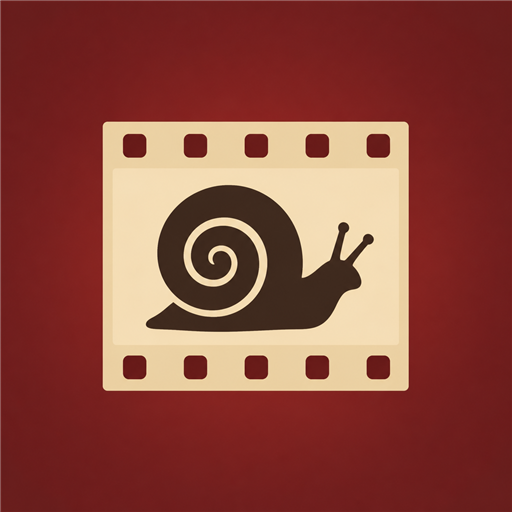
一格 35mm 胶片，齿孔在上下缘。同时说了摄影、收集、生命三件事。风险：齿孔与内窗在 32px 会糊成一个方块。
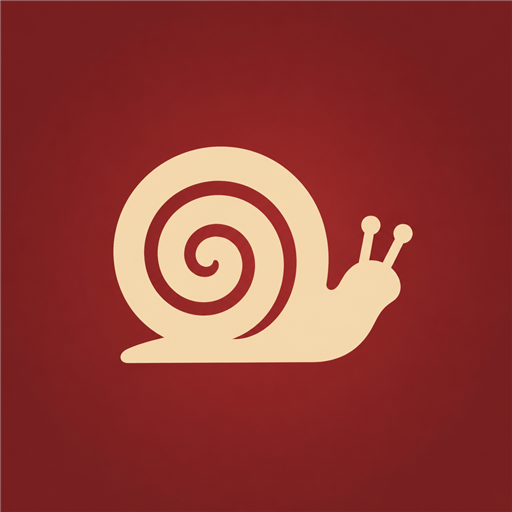
去掉容器，只验证颜色。比胶片橙沉得多、比木色暖调更有情绪，容器留给 App 内部去讲。
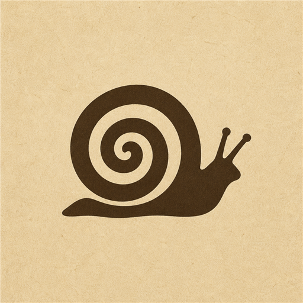
没有容器、没有封缄，就是一只博物学插图的蜗牛印在暖米纸上，像从册页裁下的一方插图。 这同时解掉了配色难题：底是纸、形是墨，就不存在「一大块高饱和色」，科技感的来源被从根上移除； 品牌橙于是可以退回它擅长的位置——只做 CTA 按钮，小面积、高饱和。
最干净的一版。壳的螺旋收得紧、留白匀，缩到 32px 仍不粘连。安静、私人，符合「给自己看的旅行笔记」。
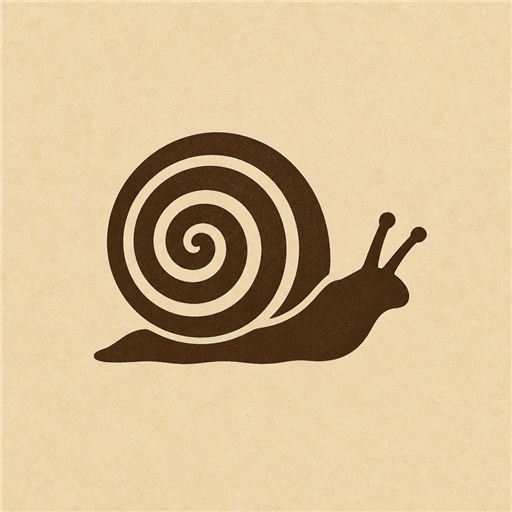
壳纹用更粗的旋带表现，博物学味更足、更接近册皮。代价是螺旋圈数多一圈，小尺寸留白更吃紧。
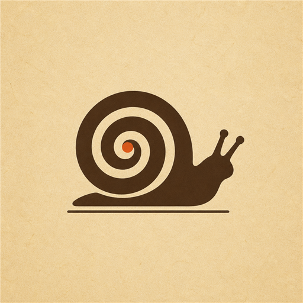
橙只剩壳心一个小点，约占画面 6%。品牌色被保留但不再定调，同时与 CTA 按钮呼应。底部一条基线暗示标本台纸。
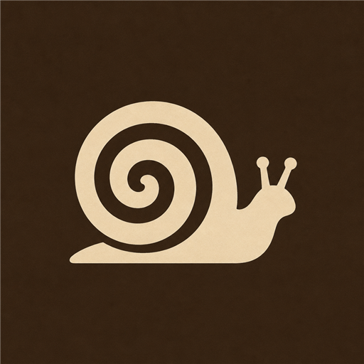
反过来印。深底在浅色壁纸上最稳，形也最醒目；但少了「纸」的直觉，更像标牌而非册页。
浅色图标在深壁纸上反差极大，四版都很跳。
这是纸底方案唯一的真实风险。纸色若接近白，图标会和浅壁纸糊在一起。 #E9DCC2 是刻意选的中调暖米，不是米白——在这里看它是否还立得住。
从 96 到 16px。重点看壳的螺旋在哪一档开始粘连。
纸墨图标的好处是它不参与 UI 配色决策——CTA 橙原样保留，一个 token 都不用改。
路上遇见的，记在这一本里。
潮间带下午 · 12 张
路上遇见的，记在这一本里。
潮间带下午 · 12 张
路上遇见的，记在这一本里。
潮间带下午 · 12 张
若最终仍选择保留火漆容器，下面是四个替代色向的实景比对，结论仍有效。 但注意：走火漆就必须在「图标色」与「CTA 色」之间做取舍，而纸墨方案不必。
同一只蜗牛，只换底色。问题不在「橙」而在饱和度与明度：高饱和加纯平涂是科技品牌的标准配方。 真实封蜡是氧化后的深绛红，老相册书脊是墨绿或深靛，雕版油墨是乌贼棕——这四个方向都落在深色低饱和区间。
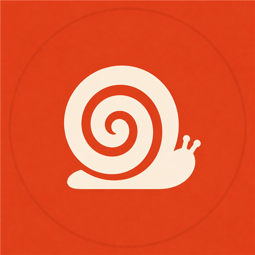
高饱和暖橙红。活力足、启动器最跳，但与 Cloudflare 同色区，读作 SaaS 而非博物学。
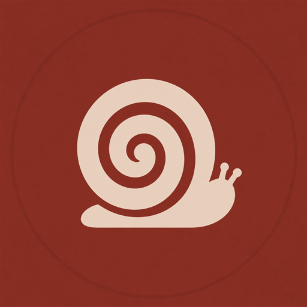
真实火漆氧化后的颜色。保住「盖印收下」的仪式叙事，同时彻底脱离科技感。与现行橙同色相，迁移最平滑。
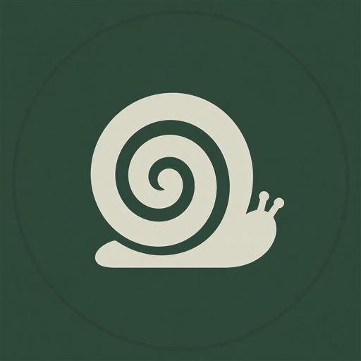
老式精装相册的布面书脊色。生物感与相册感同时成立，是四个里最贴产品双主题的。但与潮间带皮的青绿有近似风险。
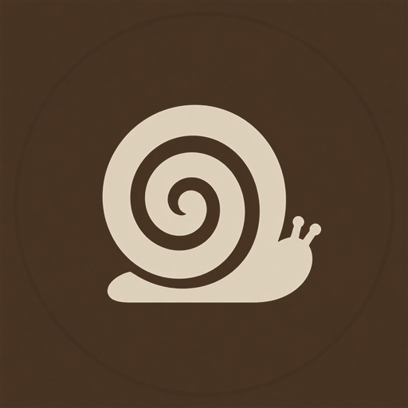
19 世纪铜版画油墨色，与现有套册册皮完全同源，一致性最高。风险是过于低调，在启动器一屏彩色里最容易被忽略。
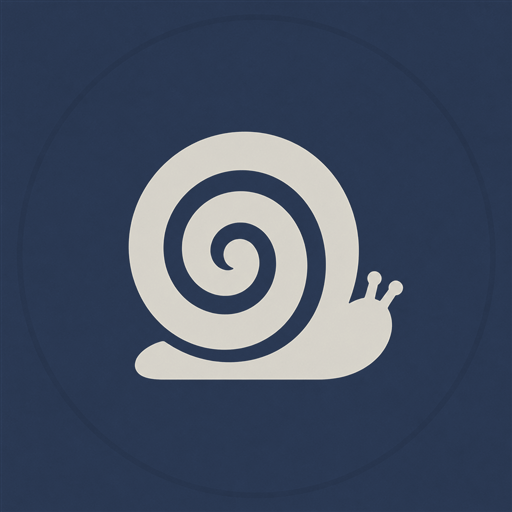
旧标本标签与古地图衬页的靛蓝。冷静克制、辨识度高，但偏「档案馆」而非「旅途」，暖意最弱。
深色壁纸下，看哪个既不像科技产品、又不至于沉没。
品牌色一旦改动，--cta 按钮、--nav-active-* 激活态、--volume-complete-line 成册线都会跟着变。
代码侧改的是 token 值，位图美术里的橙火漆（settle/daylight/pack-sealed.png 等）需要重出。
路上遇见的，记在这一本里。
潮间带下午 · 12 张
路上遇见的，记在这一本里。
潮间带下午 · 12 张
路上遇见的，记在这一本里。
潮间带下午 · 12 张
路上遇见的，记在这一本里。
潮间带下午 · 12 张
路上遇见的，记在这一本里。
潮间带下午 · 12 张
造型已定，只待套上最终色。以下用现行橙展示遮罩与尺寸表现，结论对任何底色通用。
完整蜗牛剪影——壳的螺旋、身体、两根触角——一眼认得出，48px 不糊。 工程上最干净：Android 自适应图标本就是背景层加前景层，背景直接给一个纯色， 前景只放奶油蜗牛，天然契合，无需改结构。 待修：壳内圈的缝隙偏细，32px 以下会粘连，需加粗留白。
正负形改对了，火漆的不规则边也破了纯圆。但螺旋只有壳、没有身体和触角，读不出蜗牛，更像漩涡； 底部麻绳收短后变成一根棍，整体像一支棒棒糖。纸底还要求把背景层从纯色换成位图 drawable，成本更高。
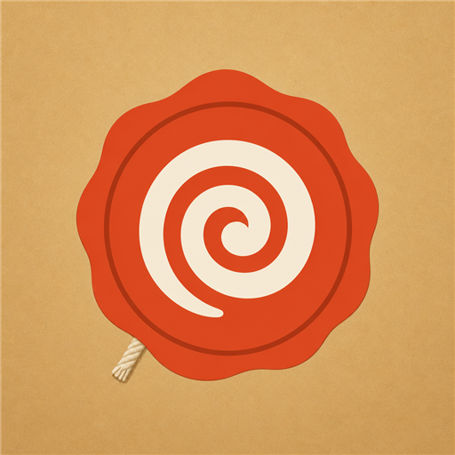
16px 确实清晰，但走过头了：只剩螺旋、丢了蜗牛，像漩涡或催眠图，尾巴那一勾还像个逗号。 最简一档的正确做法不是「只留壳」，而是拿完整蜗牛去掉触角、加粗留白，保住剪影辨识、只降精细度。
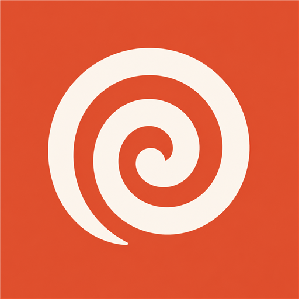
同一只蜗牛，三个精细度，覆盖 16px favicon 到 1024px 商店图。不存在一个方案通吃所有尺寸。
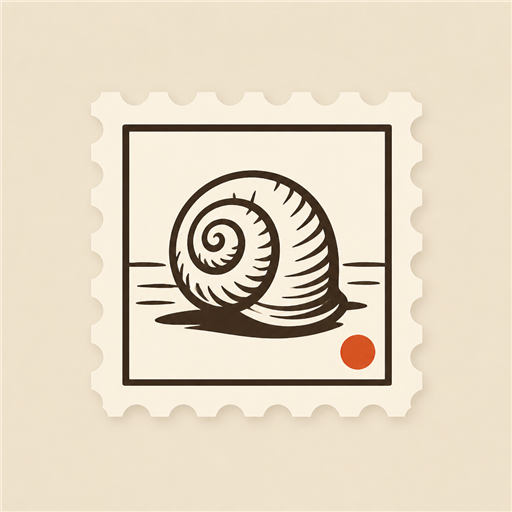
/download 侧载页 heroMeAboutPage 品牌区ic_launcher / ic_launcher_round@drawable/splash分三层用：品牌句（下载页大标）、商店副标题（30 字内说清是什么）、关于页 tagline（现为「旅行自然观察」）。报编号即可。
落点在「有名字了」，最贴结算高潮
落点在旅行叙事，与 trips.lede 同源
落点在英文名词义，配蜗牛叙事最顺
drawable-v24/ic_launcher_foreground.xml 是机器人头，values/ic_launcher_background.xml 是 <color>#FFFFFF</color>。满版方案下这里直接改成最终品牌色。apps/web/index.html 没有 <link rel="icon">，浏览器标签页是空白图标。name / short_name / description / theme_color。BioTrace。package.json 均无 description 字段。shell/daylight/page-texture.jpg 有文件，但 --page-texture / --nav-texture 两皮都是 none。capacitor.config.js 的 splash 背景 #f4f1ea 与 daylight --bg0 #f3efe7 不一致。settle/daylight/pack-sealed.png 的橙火漆、volumes/daylight/ 的成册相关资源需重出。google-services.json），通知栏纯白剪影图标暂不需要。保留供对照。C 已排除：它不在纸／火漆／雕版这套语汇里，是另起的符号体系。
小尺寸最稳，但叶子太通用；圆压方底，圆形遮罩后外圈纸只剩一道边。
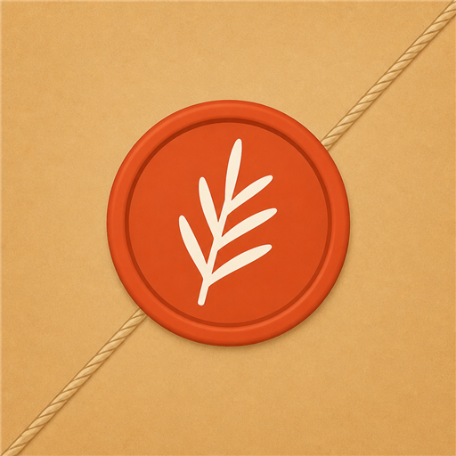
气质最足，与雕版册皮同源。齿孔会被遮罩切掉，不适合做图标，转为繁档页面 Logo。
等高线 48px 消失，等于标准地图图钉；且与这套语汇无共同基因。
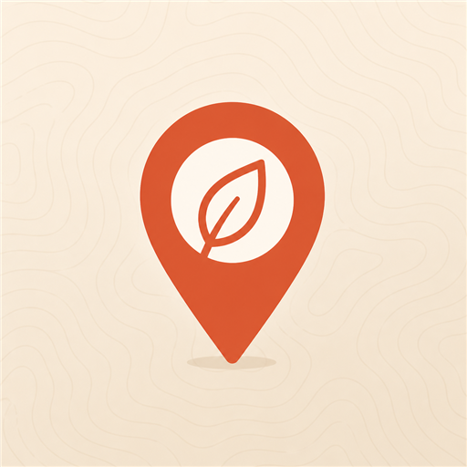
方向对但正负形反了，火漆退化成细橙环，麻绳出血到画布角会被裁。
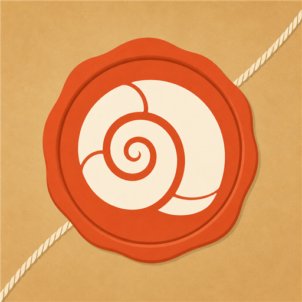